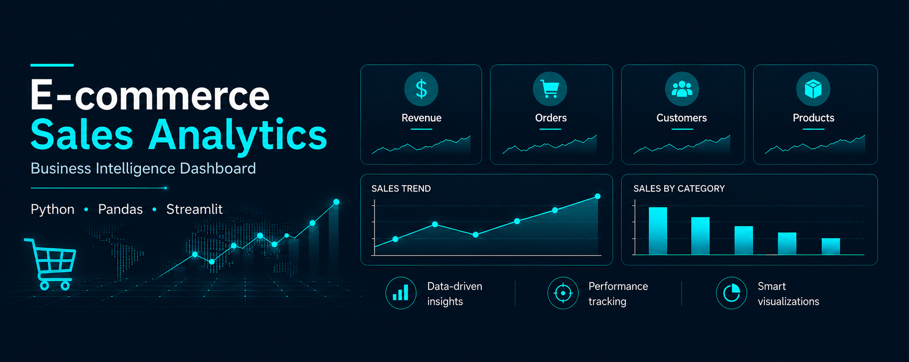

DATA ANALYTICS · E-COMMERCE
E-commerce Sales Analysis Dashboard
Interactive dashboard designed to analyze sales performance, customer behavior and product trends.
Challenge
Turn complex sales data into clear business insights.
Solution
Automated ETL pipeline and interactive dashboard.
Insights
Sales, customers, products and key KPIs.